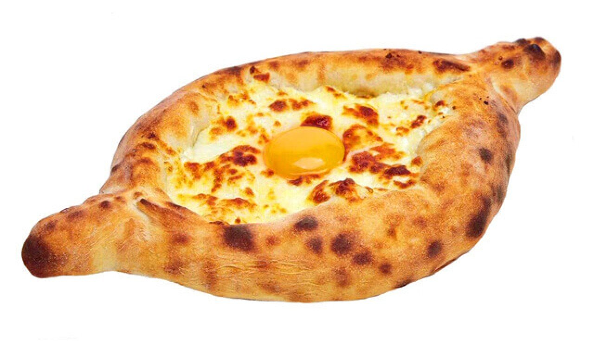

Ingredients
- Flour – 400 g
- Milk – 150 ml
- Egg – 1
- Cheese (suluguni or feta) – 200 g
- Butter – 50 g
Instructions
- Prepare dough from flour, milk, and egg.
- Shape into boat form, fill with cheese.
- Bake at 200°C until golden, top with butter and egg yolk.